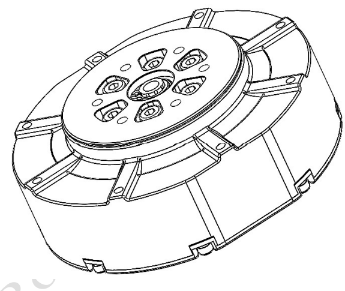
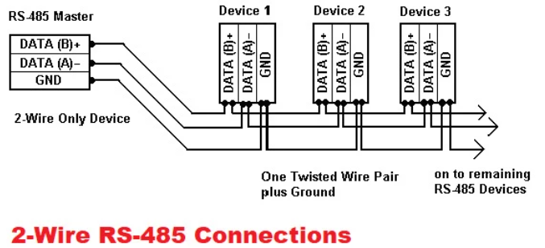
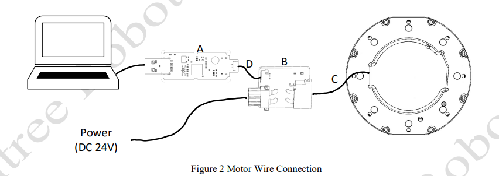
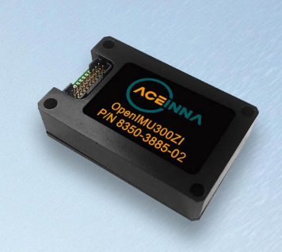
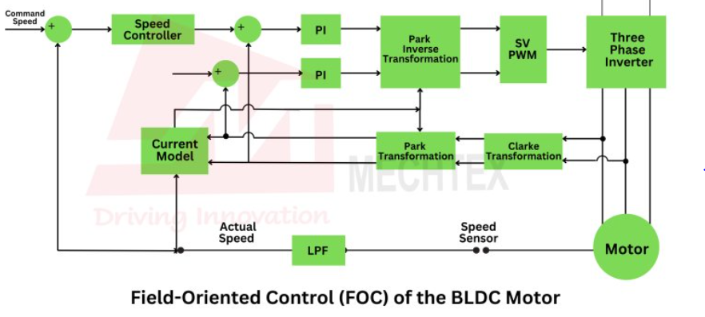

Avance del Proyecto de Robot Cuadrúpedo
1. Lectura del Datasheet del Motor GO-M8010-6

Descripción General
El motor GO-M8010-6 es un actuador de alto desempeño para aplicaciones robóticas, especialmente para articulaciones de cuadrúpedos. Integra:
Motor BLDC (sin escobillas)
Reductor planetario
Encoder absoluto de una vuelta
Algoritmo de control FOC embebido
Sensor de temperatura
Interfaz de comunicación RS-485
Modos de Control
Posición (Position Mode) : Fija el motor a una posición usando el control PD.
Velocidad (Speed Mode) : El motor gira a una velocidad constante sin importar la carga.
Torque Mode : El motor entrega un torque constante.
Modo Mixto (Force-Position Hybrid) : Combina torque, velocidad y posición.
Modo Amortiguado (Damping Mode) : Este modo simula fricción o resistencia viscosa, como si el motor estuviera inmerso en un fluido espeso. (Se ignora posición y torque)
Modo Cero Torque : Este modo desactiva activamente cualquier generación de torque por parte del motor. Modo se seguridad.
Características técnicas clave
Parámetro |
Valor |
|---|---|
Tipo de motor |
BLDC |
Voltaje de operación |
24V DC (máximo 30V) |
Reducción |
6.33:1 |
Interfaz de comunicación |
RS-485 |
Baudrate RS-485 |
4.0 Mbps (muy alto) |
Modos de control |
Posición, velocidad, torque, mixto |
Sensor de posición |
Encoder absoluto de una vuelta |
Sensor de temperatura |
Sí (protege a 90°C) |
2. Investigación del Protocolo RS-485
Características
Protocolo de comunicación diferencial (dos cables: A y B)
Alta inmunidad al ruido electromagnético
Medio físico: par trenzado
Half-duplex: sólo transmite o recibe a la vez
Permite hasta 32 dispositivos esclavos
Aplicación en robótica
Comúnmente usado en redes de actuadores (múltiples motores)
Cada motor tiene un ID único
Esquema de comunicación

3. Análisis del Hardware del Motor (con base en la figura)
Diagrama de conexión oficial

Descripción de componentes
A: Módulo adaptador USB a RS-485 → permite que tu PC controle el motor por RS-485.
B: Placa de conversión XT30(2+2) → recibe alimentación (24V DC) y canaliza datos al motor.
C: Motor GO-M8010-6 → ejecuta las órdenes recibidas vía RS-485.
D: Cable GH1.25-3 → cable de datos diferencial (RS-485) hacia el adaptador USB.
Flujo de conexión paso a paso
Conecta C (motor) a B (placa XT30).
Conecta alimentación de 24V DC a B.
Conecta B a A mediante D (cable GH1.25-3).
A se conecta al computador por USB.
Configura el puerto serial en
/dev/ttyUSBx(Linux) oCOMx(Windows).
4. Lectura del Datasheet del IMU OpenIMU300ZI

Características Generales
9 DOF:
3 ejes acelerómetro
3 ejes giroscopio
3 ejes magnetómetro
Algoritmos open-source (INS, AHRS, VG)
Microcontrolador ARM Cortex M4 @168 MHz
Kalman Filter de 16 estados
Interfaces UART/SPI
Frecuencia máxima de salida: 200 Hz
Peso < 17g
Rendimiento
Sensor |
Rango |
Precisión Típica |
|---|---|---|
Acelerómetro |
±8g |
<10 µg (instab.) |
Giroscopio |
±400 °/s |
6 °/h (instab.) |
Magnetómetro |
±8000 mGauss |
0.25 mGauss |
Aplicaciones
Robótica
Estabilización de cámaras y antenas
Vehículos autónomos
5. Investigación del Control FOC
¿Qué es FOC?
FOC (Field Oriented Control) es un método de control vectorial para motores AC sin escobillas (BLDC y PMSM) que permite:
Control preciso de torque, velocidad y posición
Reducción de vibraciones y ruido
Alto rendimiento energético
Fundamento
Transformación de Clarke y Park: convierte corrientes trifásicas a un marco de referencia rotatorio (DQ)
Control independiente de las corrientes Iq (torque) e Id (flujo)
Inversión de transformación para generar PWM hacia los MOSFETs
Esquema del FOC

Ventajas
Control suave a bajas velocidades
Excelente respuesta dinámica
Eficiencia mejorada en consumo
En el motor GO-M8010-6
El FOC está embebido dentro del controlador del motor:
El usuario no necesita programarlo
Solo se deben enviar comandos (posición, velocidad, torque)
El driver realiza el FOC internamente
🔧 Descripción General del Hardware del Motor y del Codificador
Los componentes principales de un motor de articulación robótica incluyen:
Placa de control
Estator
Rotor
Caja de engranajes planetarios
⚙️ Como los motores están diseñados para operar a altas velocidades y bajos pares, mientras que los robots requieren bajas velocidades y altos pares, el rotor del motor debe estar conectado a una caja reductora para adecuar su salida antes de transmitirla al sistema.
🎯 Codificador (Encoder)
Un codificador es un sensor que mide ángulos de rotación. Existen:
Incrementales
Absolutos multivuelta
Absolutos monovuelta ✅ (utilizado aquí)
Este codificador está instalado en el rotor y funciona como un «reloj». Cada vez que se enciende el sistema, informa el ángulo entre 0° y 360°.
📌 Ejemplo:
Si al encender el motor, el encoder reporta 380°, significa una vuelta completa + 20°.
Si se apaga y enciende nuevamente sin moverse, el encoder reportará solo 20° (pierde el conteo de vueltas tras apagado).
🤖 Control Híbrido de Motores
El motor de articulación de Unitree es una unidad de potencia integrada, con su algoritmo de control embebido. El usuario solo envía comandos, y el motor:
Recibe
Calcula internamente
Aplica el torque deseado
📐 Comandos de control:
Par de avance (feedforward):
tauPosición angular deseada:
q_desVelocidad angular deseada:
dq_desRigidez de posición:
k_pCoeficiente de amortiguamiento:
k_d
🔁 Control PD aplicado:
\tau = \text{tau} + k_p (q_{des} - q) + k_d (dq_{des} - dq)
Variable |
Descripción |
|---|---|
|
Par total deseado en Nm |
|
Posición angular deseada (rad) |
|
Posición angular actual (rad) |
|
Velocidad angular deseada (rad/s) |
|
Velocidad angular actual (rad/s) |
|
Coeficiente proporcional (rigidez) |
|
Coeficiente derivativo (amortiguación) |
⚙️ Conversión por Relación de Reducción
Al tener una caja reductora, los comandos deben considerar la relación de reducción (R):
Relación = vueltas del rotor / vueltas del eje de salida
Ejemplos:
Motor |
Relación de Reducción |
|---|---|
GO-M8010-6 |
6.33 |
A1 |
9.1 |
B1 |
8.66 |
📌 Si el rotor gira 6.33 vueltas, el eje de salida gira 1 vuelta.